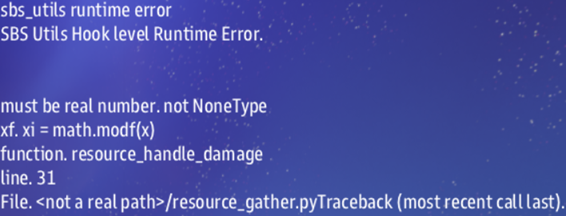

MAST Tutorial
A tutorial describing how to write a simple mission that utilizes many of the tools MAST has to offer.
Tutorial Goals
General Goals
Upon completion of this tutorial, you will have learned to: 1. Create a new mission from a template 2. Update the name and description of your mission 3. Understand what a 'label' is in MAST 4. Spawn player ships 5. Mission settings 6. Spawn terrain 7. Spawn enemies 8. Utilize Roles 9. Add science scans 10. Detect damage and destruction 11. Testing the mission 12. Recurring Tasks 13. [Build comms buttons] 14. [Handle game end]
Specific Goals
For this tutorial, we are writing a mission about finding and recovering a lost treasure.
- The players will need to fight off scavengers while they search.
- They will need to scan asteroids to find the treasure.
- They will need to shoot at the asteroid to remove debris from the treasure.
- They will need to collect the treasure by giving instructions to a specialist team retrieve it.
What you will NOT learn
MAST is loosely based on, and for Cosmos is compiled by, Python. Python is a popular programming language which integrates with the Cosmos game engine to allow for flexible mission scripting. This tutorial is not a python tutorial, and we will touch on some aspects of the language, but if you want a more thorough understanding of python there are loads of resources online.
1. Setting up your first mission
Download mast_starter
To download the basic template documents for any mission, start with the mast_starter mission from the mast_starter Github Repository
For a mission that already has some very basic functionality included, you could also use Secret Meeting. This mission is packaged with Cosmos by default, but there may be an updated version on GitHub, and it is always recommended that the most recent version be used.
For this tutorial, we will assume that you are using mast_starter as a template.
2. What's in a name?
The name of your mission is, of course, a pretty important part of the mission.
Fortunately, it's easy to set the name and description of the mission.
Name the mission folder to reflect the name you've chosen for your mission. We will be calling our mission "Treasure Hunt".
Now, open description.txt in your mission folder. There are at least three lines in this text file.
You will see something like this:
Standard
Mast Mission Template
116 #F0D56E
147 #9da36c
The second line is the mission's description, as it appears in the mission selection button.
The third line and onwards describe icons that appear on the mission selection button.
The number at the start of the line is one of the icons from
grid_icon_sheet.png, located in the /data/graphics/ folder of the artemis cosmos directory. From left to right, top to bottom, the icon's number increments from 1 onwards.
The second set of seemingly random characters is a hexidecimal color code. You can find hex codes online easily.
Once you've changed these to fit what you want, we can close description.txt and open story.mast instead:
# Use for startup logic
@map/first_map "Hello Cosmos"
" This is my first map.
story.mast is where the bulk of your mission will eventually go, but right now, we're only concerned with the line that starts with @map.A line starting with
@map defines a label, which we will get into more later. It tells the game that this is a mission, and what its name is.
In our case we want to change the name of the map from "Hello Cosmos" to our chosen mission name - "Treasure Hunt". Note that this is displayed separately from the information in description.txt. The name and description in information.txt are displayed on the button to select the mission. The name and description shown in the UI after selecting the mission are defined here in story.mast.The
/first_map part of the label is used internally by the MAST interpreter, but isn't relevant to us at the moment. You may choose to change this to whatever you want, but it cannot have spaces or special characters in it.The line following the label definition is the label description:
" This is my first map.
" Find the treasure, if you can! Many have sought this long-lost piece of history.
" None have succeeded. Some say it is only a myth. But recent archaeological finds have
" given clues regarding the location of this mysterious artifact.
3. A brief overview of Labels
A label, at its most basic, is a reusable and schedulable section of code. A label is used by MAST to create at task, and that task can be scheduled to run at a particular time, under specific conditions, and more than once, if desired. This gives mission writers a great deal of flexibility.
Label Types
There are multiple kinds of labels:
Media Labels
Map Labels
Route Labels
Main Labels
* Inline Labels (also known as sublabels)
We've already encountered a map label - @map/first_map "Treasure Hunt". In practice, most of the startup code in your mission script will be part of this map label. Media labels are very similar in syntax and meaning. They start with @media, followed by the type of media, followed by the desired filename or directory. Note that the name at the end, unlike that of a map label, currently has no bearing on the mission.
@media/music/default "Cosmos Default Music"
@media/skybox/sky1-bored-alice "borealis"
== Hello_Cosmos
" This is an example label
metadata: ```
some_data: 10
```
== Hello_Cosmos
======Hello_Cosmos==
=== Hello_Cosmos ==========
Sublabels have the same rules, but use a minus sign:
---- some_sublabel
The third line and onwards defines the metadata associated with this label. Within the set of triple backticks, you can define keys, and set the default value for that key. This is very useful, because when you schedule a task, you can include different values for each key. This allows a label to not only run multiple times, but use different information while doing so. For both main and sublabels, the description and metadata lines are optional.
You might be able to guess what is special about sublabels. They are defined inside of a main label, and are only applicable to the their parent label. Sublabels with the same parent may not share a name, but if their parent labels are different, sublabel names can be reused.
More details on tasks and labels.
4. Spawning Player Ships
Moving on from all that technical stuff, let's get into actual mission writing! … Which requires some technical stuff.
You've learned that labels are used by MAST to create a task. Well, it turns out that it's time to do so.
await task_schedule(spawn_players)
task_schedule(spawn_players). task_schedule() is a python function (if you're not sure what a function is, do a google search). It takes a label as an argument, and builds a task from that label. "But, wait!" I hear you interrupt. "Where is spawn_players defined? And how do I learn all of these functions and what they do?"
That's a couple of great questions. First, let's take a brief detour and open story.json in your mission folder. You'll see something like this:
{
"sbslib": [
"artemis-sbs.sbs_utils.v1.0.4.sbslib"
],
"mastlib": [
"artemis-sbs.LegendaryMissions.autoplay.v1.0.4.mastlib",
"artemis-sbs.LegendaryMissions.ai.v1.0.4.mastlib",
"artemis-sbs.LegendaryMissions.commerce.v1.0.4.mastlib",
"artemis-sbs.LegendaryMissions.comms.v1.0.4.mastlib",
"artemis-sbs.LegendaryMissions.consoles.v1.0.4.mastlib",
"artemis-sbs.LegendaryMissions.damage.v1.0.4.mastlib",
"artemis-sbs.LegendaryMissions.docking.v1.0.4.mastlib",
"artemis-sbs.LegendaryMissions.fleets.v1.0.4.mastlib",
"artemis-sbs.LegendaryMissions.grid_comms.v1.0.4.mastlib",
"artemis-sbs.LegendaryMissions.hangar.v1.0.4.mastlib",
"artemis-sbs.LegendaryMissions.internal_comms.v1.0.4.mastlib",
"artemis-sbs.LegendaryMissions.operator.v1.0.4.mastlib",
"artemis-sbs.LegendaryMissions.science_scans.v1.0.4.mastlib",
"artemis-sbs.LegendaryMissions.side_missions.v1.0.4.mastlib",
"artemis-sbs.LegendaryMissions.upgrades.v1.0.4.mastlib",
"artemis-sbs.LegendaryMissions.zadmiral.v1.0.4.mastlib"
]
}
If you open the
/Cosmos_Install/data/missions/__lib__/ folder, you'll see these .sbslib and .mastlib files. You can copy and rename them to .zip and unzip them to view their contents, or you can go to the github page.
The spawn_players label is defined in LegendaryMissions/fleets/map_common.mast, if you want to take a look at it.
There's another way to find all these functions, though: if you use VSCode (which I recommend), there's an extension called MAST that is built for us mission writers. It has loads of features that you'll find useful.
But let's get back to our own mission. We've looked at task_schedule(spawn_players), but there's another part of this line that's important. The line begins with await. await tells MAST to pause the current task (our mission) until the completion of the spawn_players task. Without using await, the new task would run concurrently with our mission's current task. We want to make sure that the player ships have spawned before we continue with our task, and await does this quite handily.
5. MIssion Settings
While we're on the topic of player ships, you may have noticed that Legendary Missions have various settings, including a setting for the number of player ships. You have probably wondered how you can add these settings to your mission. Let's dive in!
Let's look at the beginning of the Double Front mission. In the metadata for the map label, we have the following:
Properties:
Main:
Player Ships: 'gui_int_slider("$text:int;low: 1.0;high:8.0;", var= "PLAYER_COUNT")'
Difficulty: 'gui_int_slider("$text:int;low: 1.0;high:11.0;", var= "DIFFICULTY")'
Map:
Terrain: 'gui_drop_down("$text: {TERRAIN_SELECT};list: none, few, some, lots, many",var="TERRAIN_SELECT")'
Lethal Terrain: 'gui_drop_down("$text: {LETHAL_SELECT};list: none, few, some, lots, many", var="LETHAL_SELECT")'
Friendly Ships: 'gui_drop_down("$text: {FRIENDLY_SELECT};list: none, few, some, lots, many", var="FRIENDLY_SELECT")'
Monsters: 'gui_drop_down("$text: {MONSTER_SELECT};list: none, few, some, lots, many", var="MONSTER_SELECT")'
Upgrades: 'gui_drop_down("$text: {UPGRADE_SELECT};list: none, few, some, lots, many", var= "UPGRADE_SELECT")'
Time Limit: 'gui_input("desc: Minutes;", var="GAME_TIME_LIMIT")'
There are a bunch of
gui_whatever() functions that can be used, and they all work very similarly. They need a $text attribute and a var attribute. $text is the text displayed on the gui element. The var attribute's value is the name of a variable that can be used by your mission script.You'll notice that within
Properties, there's two sub keys: Main and Map. You can add more of these if you want, they are collapsible groupings. Within each group, you can add however many settings you desire by adding additional gui_whatever() functions, which will most likely be dropdowns and sliders as shown above.
Now how do we use these? Well, as mentioned previously, the var attribute in the gui functions tell MAST that the selected value of the gui element is assigned to the specified variable. If we wanted to, we could use the settings like so:
if LETHAL_SELECT == "none":
mine_count = 0
if LETHAL_SELECT == "few":
mine_count = 20
if LETHAL_SELECT == "some":
mine_count = 40
if LETHAL_SELECT == "lots":
mine_count = 60
if LETHAL_SELECT == "many":
mine_count = 80
terrain_to_value(LETHAL_SELECT) function to convert "none", "few", etc to numeric values, which is usually a much more useful form of information for code.
This is probably a good time to note that if a variable is in all caps like LETHAL_SELECT, it should only be changed if it really needs to be changed. You can define your own variables in all caps as well to identify variables that should not be changed.
We'll come back and use settings more in later sections.
6. Spawning Terrain
So we've got player ships and nothing else on the map right now. Let's add some terrain. For our mission, we want to have an asteroid field. One of these asteroids will contain the treasure. There's a whole slew of ways we could spawn a bunch of randomly placed asteroids. This isn't the place to go through those, so I'll instead refer you to the tutorial on terrain.
There's a very simple way to spawn generic terrain, but without any customization:
# Convert 'some' or whatever to a numeric value
terrain_value = terrain_to_value(TERRAIN_SELECT)
# A function from Legendary Missions that spawns a bunch of asteroids based on the terrain value
terrain_asteroid_clusters(terrain_value)
7. Spawning Enemies
It wouldn't be an Artemis mission without its core gameplay: combat! We need to add some enemies to our map. Similar to terrain, there's a host of ways to spawn enemies. We'll look at two options for now, and other tutorials will go into more detail on the rest.
First, we'll look at the npc_spawn() function. This can be used to spawn any npc, be it an enemy, a friendly, or a neutral.
npc_spawn takes several arguments:
npc_spawn(x,y,z,name,side,art_id,behave_id)
x, y, and z are the coordinates at which it should spawn.name is the name of the ship that is displayed on the UI, e.g. "Artemis" or "D51".
side is, as indicated, the side or faction the ship belongs to, such as "tsn" or "kralien". However, it is slightly more complicated than that, but we'll dig into this more in the next section.
art_id is used to determine what 3D model, texture, etc., that should apply to the ship. These can be found in shipData.json, and for any given ship, this is the artfileroot value.
Finally, behave_id tells Cosmos how to handle the ship. Don't worry too much about this,
As an example:
npc_spawn(300,800,0,"Ravager of Worlds","Torgoth_Leviathan","behav_npc")
npc_spawn() is great for spawning a single ship, especially if it has a particular name and art, or a particular purpose in your story. But if you want to spawn, say, a generic Kralien fleet, it would be a hassle to spawn each ship using npc_spawn().
Instead, MAST has a 'prefab' system. A prefab is actually just a label, but to use a prefab, we call the spawn_prefab() function. Legendary Missions includes several prefabs (and it is likely that more will be added over time), and it has one specifically for enemy fleets (though it isn't limited to spawning enemy enemies) called prefab_fleet_raider. I hope at this point you have intuited how to use this function:
prefab_spawn(prefab_fleet_raider)
prefab_spawn() has a second argument where you can put that data.
Let's look at the metadata for spawn_fleet_raider:
type: prefab/fleet/raider
race: kralien
ship_roles: raider
fleet_roles: raider_fleet
fleet_difficulty: 5
brain:
The metadata keys type, race, ship_roles, fleet_roles, fleet_difficulty, and bran can all be customized. I've left out the contents of brain for brevity, and because AI brains are beyond the scope of this tutorial. What isn't obvious here is that the variables START_X, START_Y, and START_Z can be set for any label, even if it's not relevant. So how do we use this. Let's say we don't need to change any of the values in the metadata except for fleet_difficulty and the position coordinates.
prefab_spawn(prefab_fleet_raider, {"fleet_difficulty": DIFFICULTY, "START_X": 1000, "START_Y": 20000, "START_Z": -100})
DIFFICULTY setting? This can be used for other labels as well, and makes the use of labels very flexible.
Note that the data is effectivley a python Dictionary, if you want to dig into those more. You might also be wondering more about fleets, how they work, and how they cam be further customized with composition and AI, but again, those topics are beyond the scope of this tutorial.
8. Utilizing Roles
In the metadata section above, there were two keys ship_roles and fleet_roles. The Role system in Cosmos is a powerful and integral part of MAST, and its definitely worth discussing roles in some detail here.
Every object in the game has roles associated with it, and they can have any number of roles. Some of the default roles are listed in shipData.json. Remember how I said we'd discuss the side argument in npc_spawn()? Well, it turns out that the side of an object is also a role, but an object can only have one side, as opposed to unlimited roles, and sides determine what shows up in the game as friendly vs enemy vs neutral.
Now, how do we use roles? There are a few functions that use them. The three you will probably use most often are role() add_role(), and has_role().
In my opinion, role() is the really fun one. If we call role("my_role"), it returns a Set containing the IDs of all objects that have the role "my_role". We can use set operations to find specific subgroups in really elegant way. Let's say we want to find all TSN ships that are not carriers:
not_carriers = role("tsn")-role("carrier")
has_role() is simple; it returns True if the specified object has the role, otherwise it returns False:
if has_role(ship, "my_role"):
# Do something
add_role() seems similar in use. It adds the role to the object, but does not return anything.
add_role(ship, "new_role")
For our tutorial mission, we want a particular asteroid to contain treasure. We've spawned the asteroids already, but how can we make one of them special? We can start by using role()!
asteroids = role("asteroid")
random_asteroid = random_id(asteroids)
add_role(random_asteroid, "treasure")
Now let's use our newfound knowledge of roles to do....
9. Science!
In out tutorial mission, we want our players to be able to find the right asteroid. To do that, the asteroid will have special scan text, so the science officer will need to scan all asteroids until the treasure is found. First, we need to tell MAST that science should be enabled for objects that meet certain criteria. In our case, the criteria is an object with the "treasure" role:
//enable/science if has_role(SCIENCE_SELECTED_ID, "treasure")
SCIENCE_SELECTED_ID. All routes have similar variables, and they can be found here. The big difference between route labels and other types of labels is how and when they run. While main and sublabels are scheduled by the mission writer, routes run whenever the specified conditions are met. In this case, the object represented by SCIENCE_SELECTED_ID must have the "treasure" role.We have another important step before we begin adding science scans:
//science if has_role(SCIENCE_SELECTED_ID, "treasure")
//enable/science route is necessary whenever we need to use a //science route. We don't need to know how or why it works in any detail (and I honestly don't understand nhow it works myself), but just know that it is very important to include.
Now, on the scan text area of the science console, there are some buttons: "scan", "status", or "info", for example. Buttons are easily added to scan info using the plus sign, followed by the name in quotes:
+ "scan"
+ "status"
+ "bio"
+ "scan"
<scan>
% This asteroid has some odd radiation readings...
+ "scan"
<scan>
% This asteroid has some odd radiation readings...
% Scans of the asteroid show that part of the asteroid is inconsistent with the rest.
% WHOA! These readings are off the charts!
+ "status":
<scan> # Give a hint as to how to access the treasure
% The asteroid has a dense core, surrounded by large quantities of normal asteroid material. Maybe we can blast some of it away...
10. Damage and Destruction
In the last section, we learned about route labels. Remember how I said that routes run whenever the conditions are met? Well, there's routes for damage - several, in fact. Here's the list of damage routes:
# When an object takes damage and is destroyed
//damage/destroy
# When damage is taken due to overheating
//damage/heat
# When an engineering node takes damage (aside from heat)
//damage/internal
# Documentation is unclear on this, but I think it's when a crew member (DamCon) is killed
//damage/killed
# Object took damage that doesn't meet the other criteria
//damage/object
//damage/object route. Once it's been hit, we're going to get rid of the asteroid and replace it with the treasure.
//damage/object if has_role(DAMAGE_SELECTED_ID, "treasure")
sbs.delete_object(DAMAGE_TARGET_ID)
sbs module is a set of functions that are directly mapped to C++ functions in the Cosmos game engine. There are a bunch of modules that are built into python and are available for us to use, such as math and random. There's also a few MAST-specific ones, such as faces and scatter.We've now gotten rid of our asteroid. How do we replace it with treasure? Let's say we want the treasure to be an upgrade. We can use the
pickup_spawn() function:
pickup_spawn(x, y, z, "tauron_focuser")
//damage/object if has_role(DAMAGE_SELECTED_ID, "treasure")
pos = get_pos(DAMAGE_SELECTED_ID) # This line gets the position of an object.
sbs.delete_object(DAMAGE_SELECTED_ID)
pickup_spawn(pos.x, pos.y, pos.z, "tauron_focuser")
11. Testing our mission
Great, let's test what we've got so far! To simplify our testing, let's only spawn one asteroid by changing one line:
# Let's just comment this line out while we test
# terrain_asteroid_clusters(terrain_value)
# And we'll add this line instead
treasure = terrain_spawn(200,0,150,None,"#,asteroid","plain_asteroid_9","behav_asteroid")
Fire up Cosmos, check the science scans. All good?
Now flip over to weapons and target the asteroid... and we get an error like this, with a whole lot more in addition.

Errors are an unavoidable part of mission writing for Cosmos. Fortunately, crashes are very rare, and we can easily restart the mission after we fix the issue. This particular error is a bit of an edge case. It's caused by
resource_gather.py, which is part of the commerce addon in LegendaryMissions. There's a couple ways to get around this, but for now the simplest is to go into story.json and remove the commerce module. It's not used for anything yet anyways.Note that if we use
terrain_asteroid_clusters(), this is not an issue and we can use the commerce addon as normal.
Debug logging
It is often useful to log the value of variable or other bits of information to verify that your code works properly, or to help isolate the cause of an issue. MAST has a built-in logger system, but I prefer to get a message in-game. I usually use the comms_broadcast() function. This function can send a message to the server (and all clients), or it can send the message to only a specific client if necessary.
test_var = 10
comms_broadcast(0, "My test var: {test_var}")
# All clients and the server will show: "My test var: 10"
If you're not feeling adventurous about bugfixes yet, you can skip this next section for now.
For the adventurous
If you open resource_gather.py, and compare with the error message, you'll see that line 31 is where the issue lies. It's actually pretty simple - the value of x is None. If we look up a few lines earlier, we see x = blob.get("local_scale_x_coeff",0). Blob data can be useful in many situations, but now isn't the time to go into it too much. Basically, the commerce module expects that the blob information contains the "local_scale_x_coeff" value. But since it's returning None, the value hasn't been set. terrain_asteroid_clusters() does this, but terrain_spawn() does not. We just need to set the local scale coefficients for our asteroid:
blob = to_blob(treasure.id)
blob.set("local_scale_x_coeff",1)
blob.set("local_scale_y_coeff",1)
blob.set("local_scale_z_coeff",1)
Back to mission writing!
Okay, now it's working great. But of our several objectives for this mission, the fourth is this: "They will need to collect the treasure by giving instructions to a specialist team retrieve it." Upgrades can be collected just by flying the ship near them, so that won't do.Let's turn to the npc_spawn() function again. We used this function before to create the asteroid we're using for testing.
# Instead of
pickup_spawn(pos.x, pos.y, pos.z, "tauron_focuser")
# Let's use
treasure = terrain_spawn(pos.x, pos.y, pos.z, None, None, "container_2a", "behav_pickup")
Challenge Time!
Before we move on, use what you know about roles and route labels to give the treasure some scan information.
12. Recurring Tasks
Let's recap what we've done so far in our mission.
* Spawned player ships and terrain
* Determined the asteroid that has the treasure
* Added scan text to the asteroid
* Detected if the asteroid has been damaged
* Replaced the asteroid with the treasure
Looking back at our list of objectives for our mission, we've completed #2 and #3. But #1 is only partially completed. We only spawn a single fleet of enemies. We want to keep the player on their toes while they search. To do that we're going to implement a recurring event where a fleet of enemies will spawn at a random location roughly 15,000 units from the players every 5 minutes or so.
Labels to the rescue
Remember that one of the key aspects of a label is that it is reusable. We can create a label, and run that label whenever we need to spawn more ships.
First, we need to identify what should happen within the label. The way I see it we have three things we need to do:
* Determine where the players are
* Determine where the enemies should spawn
* Spawn the enemies
To determine the location of the players, you'll need to know that the role for player ships is "__player__". We'll assume that there is only one player ship. Go ahead and see if you can get the id of the player ship on your own!
Now that you've given that a shot, let's see if you did what I did:
Get the player ship
players = role("__player__") # a set of all the players
ship = random_id(players) # Since there's only one (we assume), this returns the id of that ship.
Now let's figure out where enemies should spawn. We want them to spawn about 15k away from the ship, and we haven't specified any particular direction. You could find a random distance in one axis, then use some trig to figure out the distance in the other axis, but we've got other options. I'm looking at the scatter_arc() function:
pos = get_pos(ship)
points = scatter_arc(1, pos.x, pos.y, pos.z, 15000, 280, 320)
We can now spawn our enemies. We've learned a couple different ways to do this, but for now we'll stick with using the existing
prefab_fleet_raider prefab. This is only slightly more complicated because we used a scatter function:
for point in points:
prefab_spawn(prefab_fleet_raider,{"START_X":point.x, "START_Y": point.y, "START_Z": point.z, "fleet_difficulty": DIFFICULTY})
What it should look like
== spawn_area_defenders
" A label to help us spawn new enemies throughout the mission
players = role("__player__") # a set of all the players
ship = random_id(players) # Since there's only one (we assume), this returns the id of that ship.
pos = get_pos(ship)
points = scatter_arc(1, pos.x, pos.y, pos.z, 15000, 280, 320)
for point in points:
prefab_spawn(prefab_fleet_raider,{"START_X":point.x, "START_Y": point.y, "START_Z": point.z, "fleet_difficulty": DIFFICULTY})
Scheduling the label
Now we need to schedule the task. We know how to use the task_schedule() function. But we need to have the enemies spawn periodically. You can get pretty creative with how to do this - you could trigger the label when the last enemy is destroyed. You could set timers for every 5 minutes until the mission ends. Probably the simplest is to use the delay_sim() function at the end of the label and then jump back to the beginning of the label:
await delay_sim(minutes=5)
jump spawn_area_defenders
await again here. This pauses task execution until the delay is complete.I'm sure you've also seen that we're using the
jump keyword instead of task_schedule(). This is a MAST-specific keyword, and it works very similarly to the GOTO keyword in BASIC. There is a difference between using task_schedule() and jump - task_schedule() creates a new, separate task, but continues the execution of the original task, while the jump keyword keeps the execution flow in the same task. This can be useful in a situation where you want to use the same metadata. An example of this can be found in station_prefabs.mast in Legendary Missions.jump could also be replaced with ->. Its meaning and use are identical:
-> spawn_area_defenders
13. Using comms
We now need to learn how to interact with our specialists, who will collect and analyze the treasure. To do this, we need to learn about comms buttons and lifeforms.
Lifeforms
Lifeforms are a pretty flexible way to handle communication with an NPC character. They are tied to a host space object, like a ship or station, and comms can communicate with specific lifeforms by selecting the ship/station/etc that the desired lifeform is on.